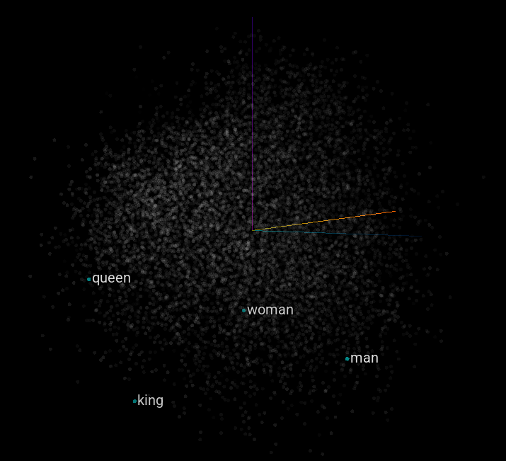

You may have heard of the legendary naturalSort in JavaScript.
/*
* Natural Sort algorithm for Javascript - Version 0.7 - Released under MIT license
* Author: Jim Palmer (based on chunking idea from Dave Koelle)
*/
function naturalSort (a, b) {
var re = /(^-?[0-9]+(\.?[0-9]*)[df]?e?[0-9]?$|^0x[0-9a-f]+$|[0-9]+)/gi,
sre = /(^[ ]*|[ ]*$)/g,
dre = /(^([\w ]+,?[\w ]+)?[\w ]+,?[\w ]+\d+:\d+(:\d+)?[\w ]?|^\d{1,4}[\/\-]\d{1,4}[\/\-]\d{1,4}|^\w+, \w+ \d+, \d{4})/,
hre = /^0x[0-9a-f]+$/i,
ore = /^0/,
i = function(s) { return naturalSort.insensitive && (''+s).toLowerCase() || ''+s },
// convert all to strings strip whitespace
x = i(a).replace(sre, '') || '',
y = i(b).replace(sre, '') || '',
// chunk/tokenize
xN = x.replace(re, '\0$1\0').replace(/\0$/,'').replace(/^\0/,'').split('\0'),
yN = y.replace(re, '\0$1\0').replace(/\0$/,'').replace(/^\0/,'').split('\0'),
// numeric, hex or date detection
xD = parseInt(x.match(hre)) || (xN.length != 1 && x.match(dre) && Date.parse(x)),
yD = parseInt(y.match(hre)) || xD && y.match(dre) && Date.parse(y) || null,
oFxNcL, oFyNcL;
// first try and sort Hex codes or Dates
if (yD)
if ( xD < yD ) return -1;
else if ( xD > yD ) return 1;
// natural sorting through split numeric strings and default strings
for(var cLoc=0, numS=Math.max(xN.length, yN.length); cLoc < numS; cLoc++) {
// find floats not starting with '0', string or 0 if not defined (Clint Priest)
oFxNcL = !(xN[cLoc] || '').match(ore) && parseFloat(xN[cLoc]) || xN[cLoc] || 0;
oFyNcL = !(yN[cLoc] || '').match(ore) && parseFloat(yN[cLoc]) || yN[cLoc] || 0;
// handle numeric vs string comparison - number < string - (Kyle Adams)
if (isNaN(oFxNcL) !== isNaN(oFyNcL)) { return (isNaN(oFxNcL)) ? 1 : -1; }
// rely on string comparison if different types - i.e. '02' < 2 != '02' < '2'
else if (typeof oFxNcL !== typeof oFyNcL) {
oFxNcL += '';
oFyNcL += '';
}
if (oFxNcL < oFyNcL) return -1;
if (oFxNcL > oFyNcL) return 1;
}
return 0;
}
If you haven’t, this function compares two strings and determines their ‘natural’ ordering. For example, Monday comes before Friday, file2 before file10, and so on.
While there’s no single correct natural ordering, they all aim to order strings based on what makes sense for humans.
 Natural sort
Natural sort
 Lexical sort
Lexical sort
But what if we could sort any word without having to program every class of words and edge cases like naturalSort above? What about words like low, medium, high? heaven, earth, hell?
Surely LLMs are the right hammer for this job?
Naturalest sort
Using LLMs may be the naturalest sort, but I was looking for something lighter than that. Surely, for the narrow use case of sorting for human sensibility, LLMs are overkill.
Contrary to the clickbait title, this post is not about LLMs per se. It’s more about an experiment in making a lighter sorting than LLM-sort. But before that, let’s set a benchmark with vibesort.sh.
❯ ./vibesort.sh cases
Input: file1,file10,file2
Output: {"sorted":["file1","file2","file10"]}
Input: low,high,medium
Output: {"sorted":["low","medium","high"]}
Input: heaven,hell,earth
Output: {"sorted":["heaven","earth","hell"]}
Input: monday,friday,tuesday,sunday
Output: {"sorted":["monday","tuesday","friday","sunday"]}
Can we do that without LLMs? Let me introduce a less natural natural sort.
Naturaler sort
The idea behind this is to use word embeddings, or vectors that represent words. I wondered if embeddings could even be sortable. I set out to experiment.
Word embedding arithmetic
Embeddings are basically high-dimensional vectors (> 300 coordinates) that describe word meanings. The key aspect is that words with similar meanings have embedding vectors that are also close in the embedding space.
Comparing two words is as ‘simple’ as taking the dot product of their vectors.
Since they are vectors, you can do other kinds of math on them. A popular cherry-picked example is King - Man + Woman = Queen.
The main idea is that dimensions encode specific meanings or features. In the example above, there could be a Gender dimension or a Nobility dimension.
 Man, woman, king, and queen projected to 2D using principal component analysis (not-to-scale illustration only). Dimensions are inherently nameless but I made up the labels for the two principal dimensions.
Man, woman, king, and queen projected to 2D using principal component analysis (not-to-scale illustration only). Dimensions are inherently nameless but I made up the labels for the two principal dimensions.
The main hypothesis: Could there be an order dimension that encodes the natural order of words? Or more generally, an order vector that describes the general direction of going from Monday to Tuesday as well as low to medium to high?

The space is weird.
The search for the order vector
Easy: just subtract end from start and we go running
orderVec = word2vec("end") - word2vec("start")
Then we project the words to be sorted onto the order vector.
Btw I’m using word2vec